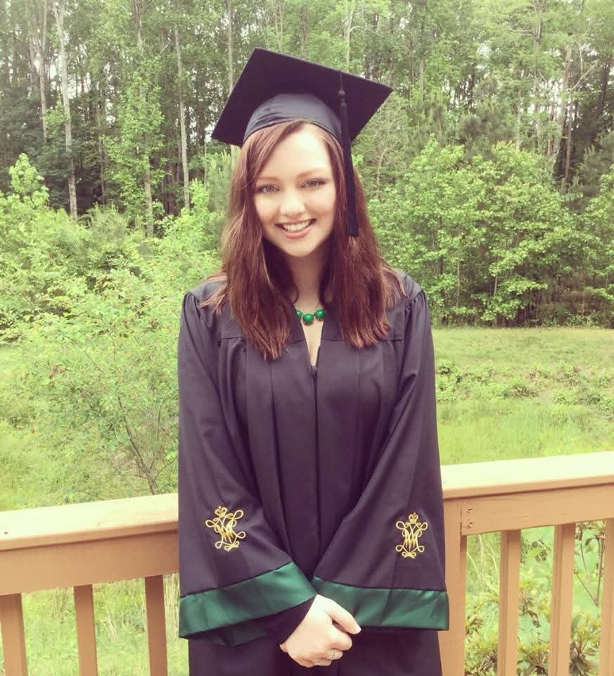

About Me
Higher education has been a central pillar in my life.
My mom has been a philosophy professor at William & Mary since I was 2. I grew up toddling around Blair Hall (W&M's philosophy building) and at 21, I was a philosophy major graduating with High Honors from that same institution, headed for a PhD program.


At UC Riverside, I discovered my passion wasn't for research — it was for teaching and supporting students.
As a Teaching Assistant for a challenging law course, I found purpose in helping overwhelmed students make sense of dense material, creating study tools, and tailoring my seminars to fit students' needs. That work — the office hours, the one-on-ones, the moment something clicked for someone — showed me what I actually wanted to do: work directly with students to help them succeed.
After leaving academia, I spent several years in legal settings before realizing I wanted to return to the student-facing work I'd loved as a TA.
That realization brought me back to William & Mary to pursue an M.Ed. in Educational Policy, Planning, and Leadership — where I've focused on success coaching, accessibility, and retention initiatives that meet students where they are.
Outside of higher ed, I have a life — I promise.
My interests include reading, music, playing the drums, and fiction writing. My "boring fun facts" are that I studied Latin for 12 years and I have no seasonal allergies.